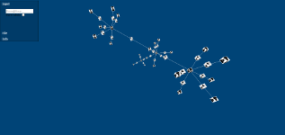
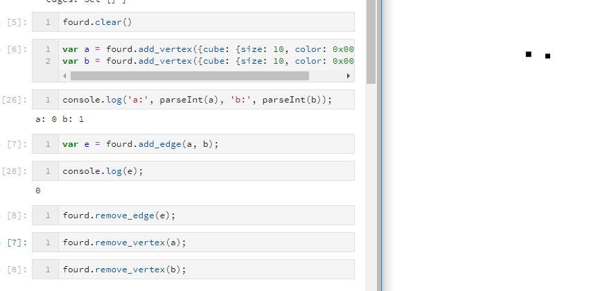
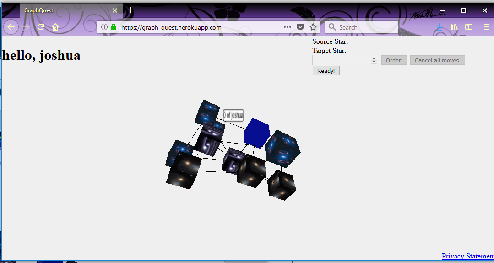
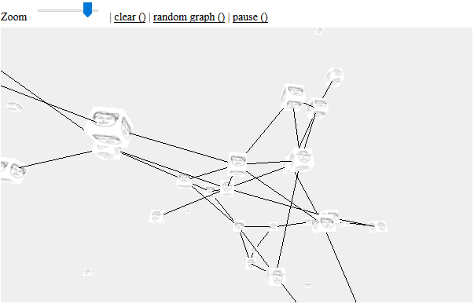
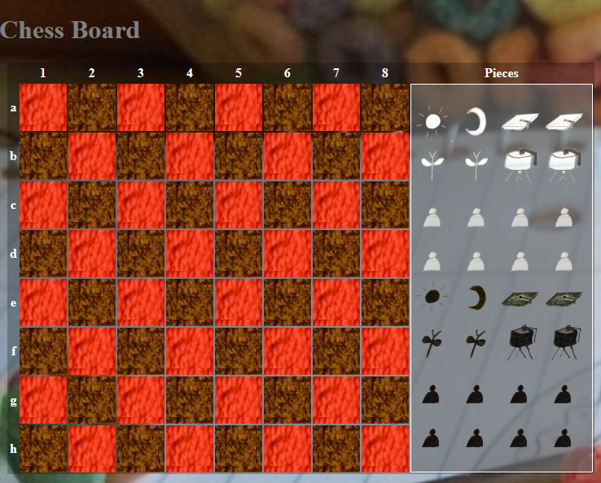
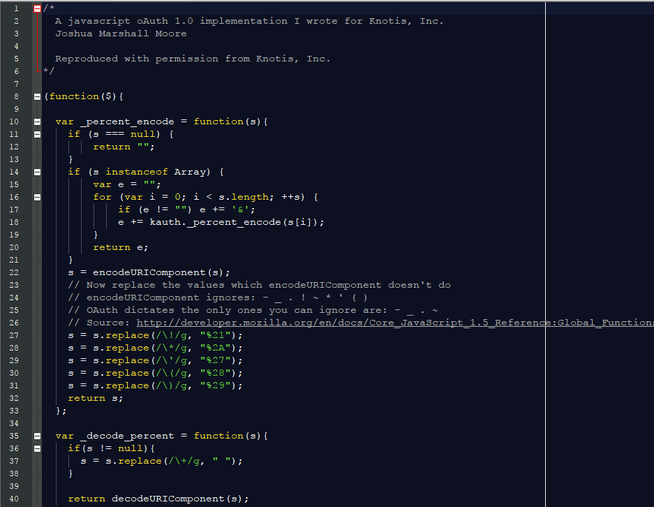
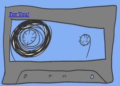

I grew up in Bamberg, Germany, then moved to North Pole, Alaska to finish high school. After graduation, I attended Seattle University and almost got my Bachlor's of Science in Computer Science and Software Engineering. I'm currently looking for work in the Las Vegas area.
Projects
fourd.cpp
fourd.cpp is a rewrite of the below mentioned fourd.js, in C++, ported to web assembly. It doesn't have the multilevel part built in, yet, but that will be a weekend project in the near future.
Social Cartography
 The best way to describe Social Cartography at the moment is as an advanced family tree maker. I hope this application will find its way into journalism and education.
FourD Socket Proxy
 FourD Socket Proxy (Code) is a proxy for the dynamic graph visualization FourD.js. It creates a server instance running on localhost, and routes server side calls to the front end.
graph-quest
 Graph Quest is an abstract space conquering game played on a graph. Turn all the stars your color before your opponent does.
fourd.js
 The fourd.js (live/code) project aims to provide a dynamic 3D graph visualization in the browser, where it can easily interact with other web applications. The name is a pun on the included dimension of time that can be represented with a dynamic vs a static graph.
Chess
 This little chess board (live/code) is not broken. After inventing several alternative chess games with a friend, I wanted a piece of code that would allow me to set up the chess peaces as I pleased. Perhaps a little antiquated, this board works for two players sharing a mouse. Now with touch! Thanks!.
jquery.kauth.js
 jquery.kauth.js (code) is a client side oauth 1.0 implementation based strictly on RFC 5849. Knotis, Inc. generously donated the code back to me after it was no longer needed.
Mixtape Dating
 Mixtape Dating is a very basic CRUD application built entirely on free technologies that allows users to leave behind playlists from a wide variety of sources.Genetic Programming
 Genetic programming (ipynb) is a fun project to familiarize myself with matplotlib's pyplot.
Genetic programming (ipynb) is a fun project to familiarize myself with matplotlib's pyplot.